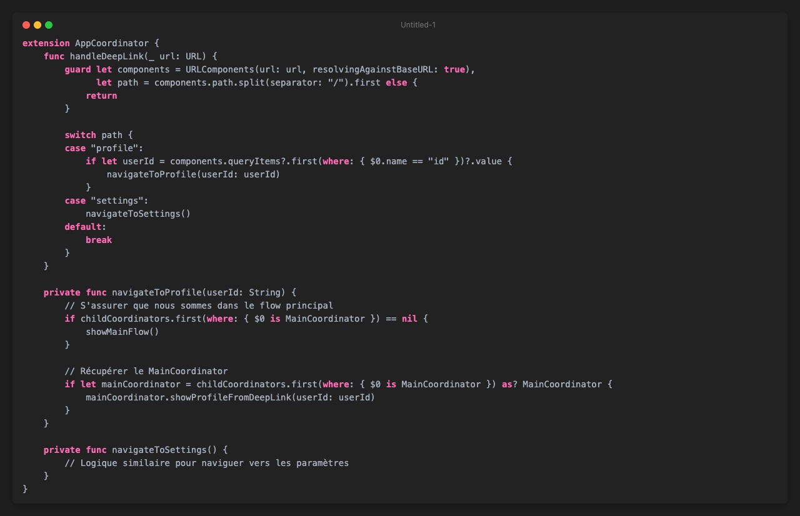
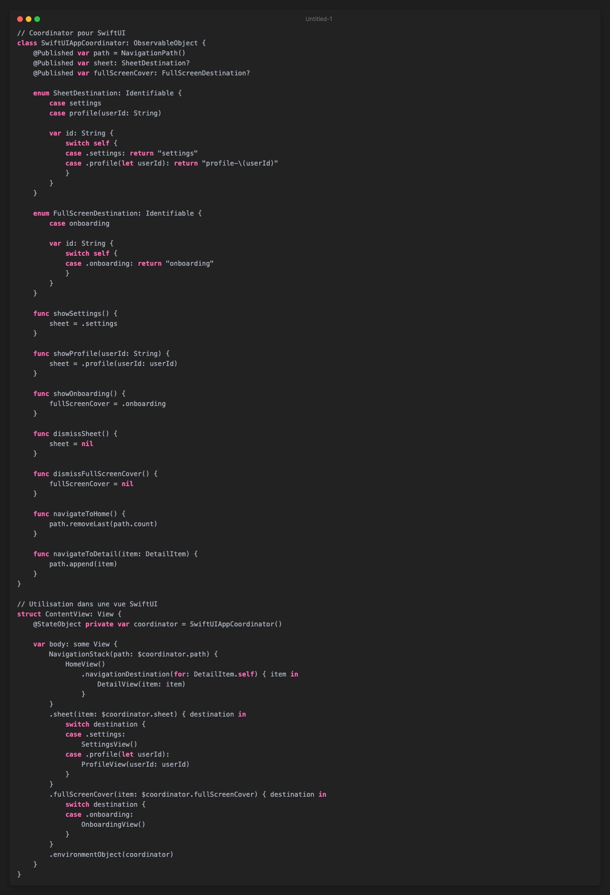

Le pattern Coordinator : Navigation déclarative et découplée dans iOS
La navigation entre les écrans est un aspect fondamental du développement d'applications iOS, mais elle peut rapidement se transformer en cauchemar lorsqu'elle n'est pas correctement structurée. Les UIViewController surchargés, les responsabilités mal définies et le code fortement couplé sont des problèmes courants qui nuisent à la maintenabilité de nos applications.
Le pattern Coordinator, popularisé par Soroush Khanlou en 2015, offre une solution élégante à ces problèmes en séparant complètement la logique de navigation du reste de l'application. Dans cet article, nous allons explorer en profondeur ce pattern, ses avantages et comment l'implémenter efficacement dans vos projets iOS.
Problématique : Pourquoi la navigation traditionnelle pose problème ?
Dans l'approche traditionnelle, un UIViewController est responsable à la fois de l'affichage de son contenu ET de la navigation vers d'autres écrans :
Cette approche présente plusieurs problèmes :
- Couplage fort : Les view controllers connaissent explicitement d'autres view controllers
- Responsabilité excessive : Un view controller gère à la fois l'UI, la logique métier ET la navigation
- Réutilisabilité limitée : Un view controller contenant la logique de navigation ne peut pas être facilement réutilisé dans un autre contexte
- Tests difficiles : Les dépendances directes compliquent les tests unitaires
Le pattern Coordinator : concept et principes
Le pattern Coordinator propose de déléguer toute la responsabilité de navigation à des objets dédiés : les coordinators. Un coordinator est responsable de :
- Créer et configurer les view controllers
- Présenter les view controllers de manière appropriée (push, modal, etc.)
- Gérer la communication entre les view controllers
- Gérer le flux de navigation de l'application
Implémentation d'un système de Coordinators
Commençons par définir un protocole de base pour nos coordinators :
Ensuite, créons un coordinator principal pour notre application :
Maintenant, implémentons un coordinator spécifique pour l'authentification :
Finalement, voici à quoi ressemblerait notre LoginViewController débarrassé de toute logique de navigation :
Coordinators hiérarchiques et passage de données
Une des forces du pattern Coordinator est sa capacité à organiser la navigation de façon hiérarchique. Voyons comment implémenter un MainCoordinator qui gère plusieurs flows :
Deep Linking et Universal Links
Le pattern Coordinator simplifie considérablement l'implémentation des deep links dans une application iOS. Voici comment nous pourrions gérer un deep link vers un profil utilisateur :

Intégration avec SwiftUI
Le pattern Coordinator peut également être adapté pour fonctionner avec SwiftUI. Bien que SwiftUI propose ses propres mécanismes de navigation (comme NavigationStack), l'utilisation de coordinators peut toujours être bénéfique, notamment dans les applications hybrides UIKit/SwiftUI.
Voici un exemple simple d'intégration :

Avantages du pattern Coordinator
L'utilisation du pattern Coordinator offre de nombreux avantages :
-
Séparation des responsabilités : Les view controllers se concentrent uniquement sur leur affichage et leurs interactions, tandis que les coordinators gèrent la navigation.
-
Réutilisabilité accrue : Les view controllers deviennent des composants d'interface réutilisables dans différents contextes.
-
Testabilité améliorée : Les coordinators peuvent être facilement mockés pour tester les flux de navigation.
-
Gestion simplifiée des deep links : Le routing centralisé facilite l'implémentation des deep links.
-
Flexibilité de l'architecture : Fonctionne avec MVC, MVVM, VIP ou toute autre architecture.
-
Évolutivité : Adapté aux projets complexes avec de nombreux écrans et flux de navigation.
Bonnes pratiques et pièges à éviter
Pour tirer le meilleur parti du pattern Coordinator, voici quelques recommandations :
Bonnes pratiques :
- Utilisez la délégation pour la communication entre les view controllers et les coordinators
- Gérez correctement le cycle de vie des coordinators enfants
- Évitez de construire des vues directement dans vos coordinators
- Maintenez une hiérarchie claire de coordinators
Pièges à éviter :
- La rétention cyclique (utilisez
weak var delegateet[weak self]) - Les coordinators trop complexes (appliquez le principe de responsabilité unique)
- La duplication de code entre coordinators (utilisez l'héritage ou la composition)
Conclusion
Le pattern Coordinator est une solution élégante aux problèmes de navigation dans les applications iOS. En séparant clairement les responsabilités, il permet de créer des applications plus modulaires, testables et maintenables.
Que vous utilisiez UIKit, SwiftUI ou une combinaison des deux, ce pattern peut être adapté à vos besoins et améliorer considérablement l'architecture de votre application.
Dans vos prochains projets, n'hésitez pas à implémenter ce pattern dès le début - vous remercierez votre futur vous lorsque votre application évoluera et que de nouveaux écrans et flux devront être intégrés !